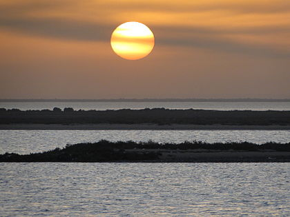

Dammam
Dammam is the sixth-most populous city in Saudi Arabia and the capital of the Eastern Province. The judicial and administrative bodies of the province, in addition to the administrative offices of other minor governmental departments functioning within the province, are located in the city. The word itself is generally used to refer to the city, but may also refer to its eponymous governorate.
Dammam is known for being a major administrative center for the Saudi oil industry. Dammam constitutes the core of the Dammam metropolitan area, also known as the Greater Dammam area, which comprises the 'Triplet Cities' of Dammam, Dhahran and Khobar. The area has an estimated population of 4,140,000 as of 2012 and is closely linked to the city through social, economic, and cultural ties. The city is growing at an exceptionally fast rate of 12% a year – the fastest in Saudi Arabia, the GCC, and the Arab world. As of 2016, Greater Dammam is the 4th largest metropolitan area by both area and population in the Gulf Cooperation Council.
The area that eventually became Dammam was settled by members of the Dawasir tribe around 1923, with permission of King Ibn Saud. The area was originally a fishing hamlet and was developed into its current state within half a century soon after the discovery of oil in the region, both as a port city and an administrative center. With the unification of Saudi Arabia, Dammam was made the capital of the newly formed Eastern Province.
• For more information go to wikipedia page